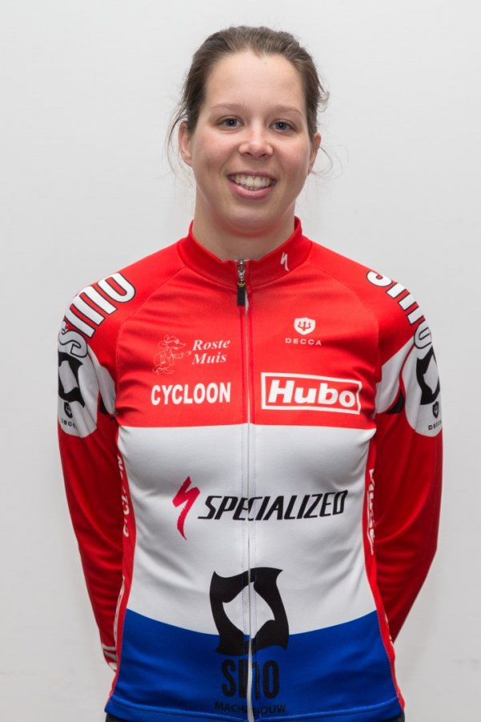

Een tijdje geleden kroop de meervoudige Nederlandse triatlonkampioene Danne Boterenbrood in haar pen en schreef een mooi artikel met enkele interessante tips. Zeker voor onze 18 cursisten van de "Start 2 Triatlon" cursus is dit een echte aanrader, want voor hen wordt het stilaan D-Day. ‘Must know triathlon tips’ doet me denken aan 2000, het jaar dat ik mijn eerste triatlon deed tijdens de ‘Coming women’ serie van de triatlon van Almere. Zonder wetsuit, met een geleende fiets en op gymschoenen voltooide ik mijn eerste sprint-afstand.Het was het begin van heel veel moois.
Ervaring
Inmiddels ben ik meer dan 16 jaar actief in de triatlonsport en heb ik denk ik het merendeel van de ‘Must know triatlon tips’ weleens gehoord danwel uitgeprobeerd. Triatlon is bij uitstek een sport voor tips en trucs. Kleding, voeding, training, racen, over alle onderwerpen valt wel wat te vertellen.
Toch denk ik dat het voor de beginnende triatleet de kunst is om het zo simpel mogelijk te houden. Drie sporten op een fatsoenlijke manier achter elkaar volbrengen is al ingewikkeld genoeg.
1. Train!
Laat je niet verleiden door het beste pakje, de snelste fiets of de slimste eiwit-shake: het zijn de trainingen die ervoor zorgen dat je op de wedstrijddag met een fit lichaam en daardoor met meer plezier de wedstrijd kan volbrengen.
Daarbij geldt: ‘consistency is key’. Zorg ervoor dat je zo consequent mogelijk je trainingen kan doen, week in, week uit. Zeker voor beginnende triatleten is het belangrijk om langzaam de belasting op te bouwen. Hiermee voorkom je dat je onverhoopt al vroeg tegen blessures aanloopt en daardoor het plezier in de sport verliest.
2. Vraag advies
Triatlon is een complexe sport en het is soms best lastig om de trainingen en het herstel goed te combineren en in te passen in de week. Zeker voor beginnende triatleten is het raadzaam om een ervaren triatleet/trainer eens om advies te vragen over hoe je je trainingen en wedstrijden het beste kan plannen. Dat geldt natuurlijk ook voor adviezen over voeding, materiaal, mooie wedstrijdlokaties etc.
3. Vergroot je duurvermogen
Het belangrijkste trainingsaspect van triatlon is het duurvermogen. Ook voor een sprint-triatlon waar je toch al ruim een uur bezig bent. Gebruik de winter om de basis te leggen voor het nieuwe seizoen met veel lange, rustige trainingen (kletstempo, ideaal toch!). Met af en toe een intensieve prikkel om de spieren wakker te schudden, bijvoorbeeld in de vorm van een crossloop of een mooie mountainbike tocht.
4. Train wedstrijdspecifiek
Ga bijvoorbeeld in het open water zwemmen zodra de watertemperatuur dat toestaat en probeer iedere week een keer de overgang tussen het fietsen en het lopen te trainen. Dit worden ook wel ‘koppeltrainingen’ genoemd: bijvoorbeeld aansluitend na een lange fietsrit nog 15-30min lopen of een volledige koppeltraining waarbij je fietsen/lopen constant afwisselt (bv 3x 30min fietsen-10min lopen op wisselende intensiteit).
Als het mogelijk is, zwem een paar keer in het 'wedstrijd water'. Het liefste op verschillende dagen, want de ene dag staan er golven en de andere dag is het water mooi vlak. Dan weet jij alvast hoe dat is. In de wisselzone loopt de wedstrijd door. Rennen dus!
5. Zoek goed materiaal
Zoals al genoemd is een goed getraind lichaam het belangrijkst. Goed, gedegen materiaal draagt echter wel bij aan het plezier en kun je prima vinden op 2e handssites of bijvoorbeeld bij bevriende triatleten in de schuur (triatleten zijn vaak grote verzamelaars). Zo voorkom je dat je in het begin veel geld kwijt bent aan het aanschaffen van alle benodigde materialen.
6. Denk na over je voeding
Voor een sprint-triatlon hoef je qua voeding niet heel ingenieus aan de slag. Een koolhydraatrijke maaltijd (pasta, pannenkoeken, wit brood met zoet beleg) 2.5-3u voor de start en een bidon sportdrank op de fiets is ruim voldoende. Heb je de smaak te pakken en wil je een keer een langere afstand proberen (meer dan 2uur), ga dan eens experimenteren met sportvoeding. Specifieke sportvoeding in de vorm van gels, repen en sportdrank kunnen je helpen de wedstrijd goed te volbrengen.

Tot slot en misschien wel veel belangrijker dan alle tips en trucs: have fun! Triatlon is een schitterende sport. Waar je ook bent, wat voor weer het ook is, hoe je je ook voelt, niets is mooier dan op pad te gaan en voor even alleen maar bezig te zijn met je lichaam.
Geniet van het (samen) trainen, geniet van de wedstrijden, geniet van wat je lichaam allemaal kan.
Succes tijdens jullie (eerste) wedstrijd!
Danne